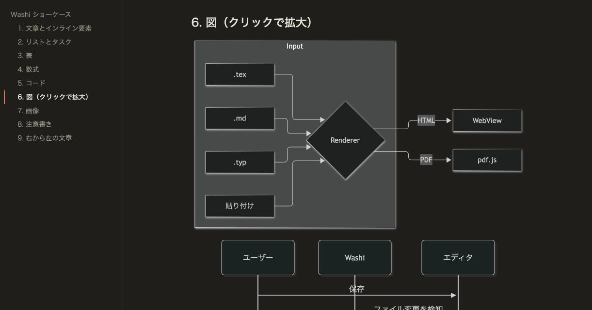

保存で、すぐ再描画
エディタで保存した瞬間に描き直し、読んでいた位置とズームはそのまま。章や参考文献、画像を別ファイルに分けていても、それらの保存で更新されます。AI エージェントがファイルを書き換えていく様子も、そのまま追えます。
Markdown・Typst・LaTeX・Mermaid・PDF を、ひとつの軽量ビューアで。編集は好きなエディタや AI エージェントに任せて、Washi は保存のたびに、スクロール位置を保ったまま描き直します。

書く道具ではなく、読む道具。だから起動が軽く、画面はいつも静かです。
エディタで保存した瞬間に描き直し、読んでいた位置とズームはそのまま。章や参考文献、画像を別ファイルに分けていても、それらの保存で更新されます。AI エージェントがファイルを書き換えていく様子も、そのまま追えます。
クリップボードの内容から Markdown・Typst・LaTeX・Mermaid を自動判定して表示。ファイルを作る必要はありません。ドロップにも対応しています。
Typst・LaTeX の PDF を ⌘ クリックすると、エディタの該当行を開きます（Typst は行・列、LaTeX は SyncTeX）。
現在位置を追従する目次パネル。PDF のしおりにも対応し、⌘F では一致箇所まで自動でスクロールします。
KaTeX の数式、色分けされたコード（コピーボタン付き）、Mermaid の図はクリックで拡大してドラッグ・ホイールで操作できます。
システム・ライト・ダークのテーマ、本文幅の切替、⌘+/− やピンチでの拡大縮小。右から左へ書く文章も正しく表示します。
複数のファイルを渡すと別ウィンドウで開きます。文書内の相対リンクは Washi の中でそのまま辿れます。
テキストの選択・検索、しおりの目次に対応。表示付近のページだけを描くので、長い PDF も軽く開けます。
washi report.typ で、起動を待たずに開いて戻ります。--json の出力、事前の検証、cat draft.md | washi - での標準入力にも対応。AI エージェントの出力を、すぐ目で確認できます。
文書内の生の HTML は除去し、アプリには厳しめの CSP を設定。テレメトリや解析はありません。Washi 自身が通信するのは、Typst の @preview パッケージを取得するときだけです（外部の tectonic は、必要な TeX パッケージを自分で取得することがあります）。



washi-core に分け、アプリ本体（src-tauri）は画面とウィンドウだけを受け持ちます。Markdown・Typst・LaTeX をファイルとして開けるアプリとの比較です。書くなら Oleafly・Texpile・hibi・Quire Writer、読むなら Washi や Typeset Viewer、という住み分けだと考えています。
| Washi | Typeset Viewer | Texpile | Oleafly | hibi | Quire Writer | |
|---|---|---|---|---|---|---|
| 位置づけ | 閲覧専用 | 閲覧＋ノート・レビュー | エディタ | 執筆ワークスペース | ノートエディタ | AI エージェント付き執筆アプリ |
| ライセンス | ○ MIT | × 独自（ソース非公開） | ○ AGPL-3.0 | ○ AGPL-3.0 | ○ GPL-3.0 | ○ GPL-3.0 |
| 最新リリース | 0.1.0 | v0.8.0 | v1.3.0 | v0.4.5 | nightly のみ | v0.2.8 |
| Markdown・Typst・LaTeX | ○ | ○ | ○ | ○ | ○ アドオンで有効化 | ○ |
| Markdown に必要な外部ツール | なし | Pandoc | なし | なし（Pandoc 同梱） | なし | なし |
| Mermaid | ○ | ? | ? | ? | ○ | ? |
| 外部エディタの保存を自動反映 | ○ 位置を維持（include・.bib・画像も監視） | ○ 位置を維持（include・.bib も監視） | ? 記載なし | ? 記載なし | ? 記載なし | ? 記載なし |
| 入力中のライブプレビュー | × 編集機能を持たないため | × | ○ | ○ | ○ 横並び表示 | ○ |
| 組み込みエディタ | × 意図的に持たない | × | ○ | ○ | ○ | ○ |
| PDF → ソースへジャンプ | ○ Typst・LaTeX | ? 記載なし | ? 記載なし | ○ SyncTeX・tinymist | ? 記載なし | ○ Typst は tinymist |
| LaTeX エンジン | 別途（tectonic / latexmk。Homebrew なら tectonic も入る） | 別途（latexmk） | 別途（TeX ディストリビューション） | ○ Tectonic を同梱 | 別途 Tectonic | 別途（latexmk） |
| macOS の配布サイズ | 24 MB（zip） | 28 MB（zip） | ? | 191 MB（dmg） | ? リリースなし | 56 MB（dmg） |
| 対応 OS | macOS（他は未検証） | macOS 14+（Apple Silicon） | Windows・macOS・Linux | Windows・macOS・Linux | Windows・macOS | macOS（Linux は実験的） |
2026-10-06 に GitHub（リポジトリ・リリース・README）と各公式サイトで確認しました。「?」は README・公式サイトに書かれておらず確認できなかった項目で、「機能がない」という意味ではありません。Washi のサイズは自前のビルドで実測した zip、他は配布物（形式が違うため目安です）。Typst と LaTeX の片方だけ、あるいは Markdown だけのアプリは README にまとめています。
Apple Silicon の macOS 向けです。washi コマンドと、LaTeX 用の tectonic も一緒に入ります。署名・公証は未対応なので、Cask が隔離属性を外します。
# Homebrew で入れる（Apple Silicon） $ brew install --cask kiwamizamurai/tap/washi $ washi report.typ notes.md # ソースから動かす $ git clone https://github.com/kiwamizamurai/washi $ cd washi && pnpm install $ pnpm tauri dev -- -- --gui examples/showcase.md # アプリを作る（target/release/bundle/macos/Washi.app） $ pnpm release